승강기산업기사 (2019-03-03 기출문제)
1과목: 승강기개론
1. 정격하중 1000kg, 정격속도 60m/min, 오버밸런스율 40%, 총합효율 60%일 때 권상전동기의 용량은 약 몇 kW인가?
- 5.9
- 6.5
- 8.2
- 9.8
(정답률: 74%)

2. 승강기의 도어 시스템 종류를 분류할 때 1S, 2S, 3S, 2짝문 CO, 4짝문 CO로 나타내는데, 여기서 1S, 2S, 3S, 표기 중 S는 무엇을 나타내는가?
- 문짝수
- 측면 열기
- 중앙 열기
- 상하 열기
(정답률: 93%)
3. 파워 유니트의 구성요소가 아닌 것은?
- 플런저
- 전동기
- 유압펌프
- 사이렌서
(정답률: 59%)
4. 완충효과가 있는, 즉시 작동형 비상정지장치의 정격속도는 몇 m/s 이하인가?
- 0.5
- 0.63
- 1.0
- 1.5
(정답률: 66%)
5. 엘리베이터의 로핑 방법의 종류로서 적합하지 않은 것은?
- 1:1
- 2:1
- 4:1
- 5:1
(정답률: 94%)
6. 카 비상정지장치가 작동될 때, 부하가 없거나 부하가 균일하게 분포된 카의 바닥은 정상적인 위치에서 최대 몇 %를 초과하여 기울어지지 않아야 하는가?
- 1
- 3
- 5
- 10
(정답률: 93%)
7. 엘리베이터의 분류방법이 아닌 것은?
- 구동방식에 의한 분류
- 적재하중에 의한 분류
- 제어방식에 의한 분류
- 용도 및 종류에 의한 분류
(정답률: 84%)
8. 엘리베이터의 교류 2단 속도제어에 관한 설명으로 틀린 것은?
- 주로 공동주택용 승강기에 많이 사용된다.
- 전동기는 고속권선과 저속권선으로 구성되어 있다.
- 교류 1단 속도제어에 비해서는 착상정도가 우수하다.
- 기동과 주행은 고속권선으로 하고 감속과 착상은 저속권선으로 한다.
(정답률: 81%)
9. 엘리베이터가 최상층 및 최하층을 지나치지 않도록 하기 위하여 설치하는 장치는?
- 리미트 스위치
- 종단층 강제감속장치
- 록다운 비상정지장치
- 록업 비상정지장치
(정답률: 87%)
10. 3~8대의 엘리베이터가 병설될 때 개개의카를 합리적으로 운행하는 방식으로 교통수요의 변화에 따라 카의 운전내용을 변화시켜서 가장 적절하게 대응하게 하는 방식은?
- 군 관리방식
- 자동 왕복운전방식
- 군 승합 전자동방식
- 양방향 승합 전자동방식
(정답률: 89%)
11. 카 문턱과 승강장문 문턱 사이의 수평거리는 최대 몇 mm 이하이어여 하는가?
- 30
- 35
- 40
- 60
(정답률: 82%)
12. 장애인용 엘리베이터는 호출버튼 또는 등록버튼에 의하여 카가 정지하면 몇 초 이상 문이 열린 채로 대기하여야 하는가?
- 5초
- 10초
- 15초
- 20초
(정답률: 81%)
13. 조속기로프 풀리의 피치 직경과 조속기로프의 공칭 직경 사이의 비는 최소 얼마 이상이어야 하는가?
- 10
- 20
- 30
- 40
(정답률: 65%)
14. 로프 마모상태를 판정할 때 소선의 파단이 균등하게 분포되어 있는 경우, 로프 사용한도의 기준으로 옳은 것은?
- 1구성 꼬임(스트랜드)의 1꼬임 피치 내에서 파단 수 1 이하
- 1구성 꼬임(스트랜드)의 1꼬임 피치 내에서 파단 수 2 이하
- 1구성 꼬임(스트랜드)의 1꼬임 피치 내에서 파단 수 3 이하
- 1구성 꼬임(스트랜드)의 1꼬임 피치 내에서 파단 수 4 이하
(정답률: 66%)
15. 야간에 카 안의 범죄활동을 방지하기 위하여 각 층에 정지하면서 목적층까지 주행토록 하는 장치는?
- 파킹스위치
- 정진 시 조명장치
- 화재 관제운전스위치
- 각층 강제정지운전스위치
(정답률: 92%)
16. 유회시설에 모노레일의 허용 고저 차는 얼마인가?
- 2m 미만
- 3m 미만
- 2.5m 미만
- 3.5m 미만
(정답률: 65%)
17. 일반적으로 엘리베이터의 정격속도가 1m/s 이하의 비교적 행정이 작은 경우에 사용되는 완충기로 가장 알맞은 것은?
- 유입 완충기
- 전기 완충기
- 권동 완충기
- 스프링 완충기
(정답률: 87%)
18. 엘리베이터의 기계실에 설치되지 않는 것은?
- 권상기
- 제어반
- 조속기
- 비상정지장치
(정답률: 89%)
19. 전기식 엘리베이터의 주행 중 또는 가감속 시권상도르래와 와이어로프의 미끄러짐에 관한 설명으로 틀린 것은?
- 권부각이 클수록 미끄러지기 쉽다.
- 카의 가속도와 감속도가 클수록 미끄러지기 쉽다.
- 카측과 균형추축의 장력비가 클수록 미끄러지기 쉽다.
- 권상도르래의 홈과 와이어로프간의 마찰계수가 작을수록 미끄러지기 쉽다.
(정답률: 84%)
20. 유압식 엘리베이터의 펌프는 강제송유식이 많이 사용되는데 그 중 압력 맥동이 작고 진동과 소음이 작아 일반적으로 많이 사용하는 펌프는?
- 베인펌프
- 원심펌프
- 기어펌프
- 스크루펌프
(정답률: 81%)
2과목: 승강기설계
21. 엘리베이터 도어머신에 요구되는 특성 중 옳은 것은?
- 원활한 작동을 위해서는 소음이 있어도 좋다.
- 감속기로는 헬리컬 감속기가 주류를 이루고 있다.
- 우수한 성능을 내기 위해서는 중량감이 있어야 한다.
- 구출 작업 시 정전 및 닫혀 진 상태에서도 잠금해제구간에서는 손으로 열 수 있어야 한다.
(정답률: 83%)
22. 주로프이 안전율이 12 이상인 경우 사용할 수 있는 최소 주로프의 직경(mm)은?
- 6
- 8
- 10
- 12
(정답률: 84%)
23. 전기식 엘리베이터의 승강로 조명에 대한 설명 중 옳은 것은?
- 카 지붕의 조도는 150lx 이상이다.
- 승강로 천장 및 피트 바닥에서 약 0.5m에 중간 전구들과 함께 각각 1개의 전구로 구성되어야 한다.
- 피트 바닥으로부터 1m 위치에서의 조도는 80lx 이상이다.
- 승강로 벽이 일부 없는 경우 승강로 조명은 300lx 이상이다.
(정답률: 80%)
24. 스프링 완충기의 설계와 관계없는 것은?
- 카 자중 + 65kg
- 스프링 지수
- 와알의 계수
- 횡탄성 계수
(정답률: 69%)
25. 스프링 완충기에 대한 설명으로 틀린 것은?
- 완충기는 조속기의 작동 속도로 하강 시 최종 리미트 스위치가 동작하지 않은 경우 충격을 완화하여 정지시키는 장치이다.
- 카측 완충기의 적용 중량 기준은 스프링간 접촉된 부분이 없이 정하중 상태에서 카자중과 정격 하중을 합한 무개의 2배를 견디어야 한다.
- 엘리베이터의 속도가 0.5m/s 초과 0.75m/s 이하에서의 스프링 완충기의 최소행정은 64mm이다.
- 속도가 1.0m/s 이하의 비교적 행정이 작은 경우에 사용한다.
(정답률: 43%)
26. 피난용 엘리베이터의 기본요건에 대한 설명으로 틀린 것은?
- 구동기 및 제어 패널·캐비닛은 최상층 승강장보다 위에 위치되어야 한다.
- 카 문과 승강장문이 연동되는 자동 수평 개폐식 문이 설치되어야 한다.
- 출입문의 유효 폭은 900mm 이상, 정격하중은 800kg 이상이어야 한다.
- 승강로 내부는 연기가 침투되지 않는 구조이어야 한다.
(정답률: 79%)
27. 다음은 엘리베이터 브레이크에 대한 설명이다. (ⓐ), (ⓑ)안에 알맞은 것은?(2022년 03월 04일 확인된 규정 적용됨)
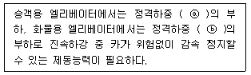
- ⓐ 120%, ⓑ 125%
- ⓐ 125%, ⓑ 125%
- ⓐ 125%, ⓑ 135%
- ⓐ 135%, ⓑ 125%
(정답률: 77%)
28. 전동기 절연의 종류가 아닌 것은?
- A종
- B종
- C종
- E종
(정답률: 79%)
29. 전동기 효율을 구하는 식은?
- 출력/입력×100%
- 입력/출력×100%
- (출력-손실)/출력×100%
- (입력-손실)/출력×100%
(정답률: 64%)
30. 권상기가 전속력으로 운전할 때 전원이 차단된 경우, 권상기의 제동기는 다음 중 어떤 조건에서 카가 안전하게 감속 및 정하도록 해야 하는가?
- 전부하 하강 및 무부하 상승 시
- 무부하 하강 및 전부하 상승시
- 전부하 하강 및 전부하 상승 시
- 무부하 하강 및 무부하 상승시
(정답률: 69%)
31. 후크의 법칙과 관련된 계산식 중 틀린 것은? (단, E: 종탄성계수, W: 하중, ℓ: 원래의 길이, σ : 인장응력, λ: 변형된 길이, ε: 종변형율, G: 횡탄성계수, m: 포아송의 수, A: 단면적)
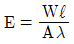
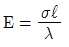
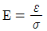
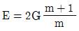
(정답률: 69%)
32. 6층 이상으로서 연면적이 7200m2인 숙박시설인 경우 승객용 엘리베이터를 몇 대 설치해야 하는가?
- 1대
- 2대
- 3대
- 4대
(정답률: 70%)
33. 다음 ( )에 알맞은 것은?
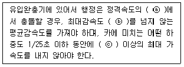
- ⓐ 110%, ⓑ 0.1G, ⓒ 1G
- ⓐ 115%, ⓑ 1G, ⓒ 2G
- ⓐ 110%, ⓑ 1G, ⓒ 2.5G
- ⓐ 115%, ⓑ 1G, ⓒ 2.5G
(정답률: 75%)
34. 그림은 3상 전동기의 속도를 제어하기 위한 회로이다. 전동기 기동 시(A), 전동기 정격속도 운전 시(B), 전동기 감속 시(C)에 대한 3개의 스위치 상태를 순서대로 나열한 것은? (단, 연결은 스위치 turn on을 의미하고, 개방은 스위치 turn off를 의미한다.)
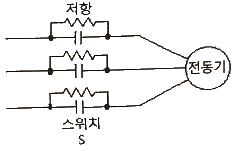
- A: 연결, B: 개방, C: 연결
- A: 연결, B: 연결, C: 개방
- A: 개방, B: 연결, C: 개방
- A: 개방, B: 연결, C: 연결
(정답률: 63%)
35. 인버터 방식의 엘리베이터에서 고조파의 영향을 줄이기 위한 방법과 거리가 가장 먼 것은?
- 누전차단기를 설치한다.
- 기계실 주변에 TV 안테나 설치를 멀리한다.
- 승강기 전용 변압기를 설치하여 사용한다.
- 인버터 장치와 각종 통신기기 혹은 제어라인 등의 접지선을 각각 독립 배선한다.
(정답률: 75%)
36. 필스 폭을 변화시켜 출력측의 교류 전압을 제공하는 인버터 제어방식은?
- PAM
- PPM
- PFM
- PWM
(정답률: 83%)
37. 시간당 9000명을 수송하는 에스컬레이터에서 수직고가 5m이고, 종합효율이 60%라면 소요동력은 약 몇 kW인가? (단, 1인당 몸무게는 68kg으로 한다.)
- 10
- 12
- 14
- 16
(정답률: 45%)
38. 와이어로프를 엘리베이터에 적용시킬 때의 설명으로 틀린 것은?(오류 신고가 접수된 문제입니다. 반드시 정답과 해설을 확인하시기 바랍니다.)
- 로프는 3가닥 이상이어야 한다.
- 로프는 공칭 직경이 8mm 이상이어야 한다.
- 로프와 로프 단말 사이의 연결을 로프의 최소 파단하중의 90% 이상을 견뎌야 한다.
- 권상도르래, 풀리 또는 드럼과 현수로프의 공칭 직경사이의 비는 스트랜드의 수와 관계없이 40 이상이어야 한다.
(정답률: 69%)
39. 엘리베이터 도어 시스템의 설계에 대한 내용으로 적합하지 않은 것은?
- 잠금 부품이 7mm 이상 물려지기 전에는 카가 출발되지 않아야 한다.
- 승강장문 헤더와 카 바닥 사이의 유효 깊이가 2m 이상이어야 한다.
- 잠금 부품은 문이 열리는 방향으로 350N의 힘을 가할 때 잠금 효력이 감소되지 않아야 한다.
- 엘리베이터가 주행하는 중에도 도어 모터에 계속 일정한 크기의 전류가 흐르도록 한다.
(정답률: 70%)
40. 카 자중 3000kg, 적재하중 1500kg, 승강행정 20m, 로프 가닥수 6, 로프 중량 1kg/m일 때 트랙션비는? (단, 오버밸런스율은 40%로 한다.)
- 빈 카가 최상층에서 하강 시: 1.044 전부하 카가 최하층에서 상승 시: 1.190
- 빈 카가 최상층에서 하강 시: 1.154 전부하 카가 최하층에서 상승 시: 1.210
- 빈 카가 최상층에서 하강 시: 1.180 전부하 카가 최하층에서 상승 시: 1.190
- 빈 카가 최상층에서 하강 시: 1.240 전부하 카가 최하층에서 상승 시: 1.283
(정답률: 65%)
3과목: 일반기계공학
41. 그림과 같은 탄소강의 응력(σ)-변형율(ϵ)선도에서 각 점에 대한 내용으로 적절하지 않은 것은?
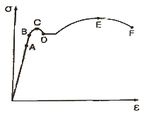
- A : 비례한도
- B : 탄성한도
- E : 극한강도
- F : 항복점
(정답률: 70%)
42. 밴드 브레이크 제동장치에서 밴드의 최소 두께 t(㎜)를 구하는 식은? (단, 밴드의 허용인장응력은 σ(N/mm2), 밴드의 폭은 b(mm), 밴드의 최대 긴장측 장력은 F1(N)이다.)
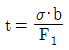
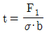
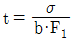
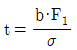
(정답률: 57%)
43. 그림과 같은 기어열에서 각 기어의 잇수가 Z1=40, Z2=20, Z3=40 일 때 O1 기어를 시계방향으로 1회전 시켰다면 O3 기어는 어느 방향으로 몇 회전 하는가?
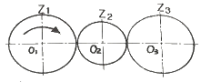
- 시계방향으로 1회전
- 시계방향으로 2회전
- 시계반대방향으로 1회전
- 시계반대방향으로 2회전
(정답률: 81%)
44. 다음 중 손다듬질 작업에서 일반적으로 쓰지 않는 측정기는?
- 암페어미터
- 마이크로미터
- 하이트 게이지
- 비니어 캘리퍼스
(정답률: 68%)
45. 제품이 대형이고 제작수량이 적은 경우 제품형태의 중요 부분만을 골격으로 만들어 사용하는 목형은?
- 골격형
- 긁기형
- 회전형
- 코어형
(정답률: 83%)
46. 재료의 인장강도가 3200N/mm2인 재료를 안전율 4로 설계할 때 허용 응력은 약 몇 N/mm2인가?
- 400
- 600
- 800
- 1600
(정답률: 87%)
47. 언더컷에 대한 설명으로 옳은 것은?
- 아크길이가 짧을 때 생긴다.
- 용접 전류가 너무 작을 때 생긴다.
- 운봉 속도가 너무 느릴 때 생긴다.
- 용접 시 경계부분에 오목하게 생기는 홈을 말한다.
(정답률: 82%)
48. 그림과 같이 판, 원통 또는 원통용기의 끝부분에 원형단면의 테두리를 만드는 가공법은?
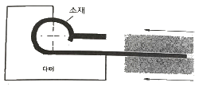
- 버링(burring)
- 비딩(beading)
- 컬링(curling)
- 시밍(seaming)
(정답률: 79%)
49. 중앙에 집중하중 W를 받는 양단지지 단순보에서 최대 처짐을 나타내는 식은? (단, E=세로탄성계수, I=단면 2차 모멘트, ℓ=보의 길이이다.)
- W/ℓ2/48EI
- W/ℓ3/48EI
- W/ℓ3/24EI
- W/ℓ4/48EI
(정답률: 69%)
50. 강재 원형봉을 토션바(torsion bar)로 사용하고자 할 때 원형봉에 발생하는 최대 전단응력에 대한 설명으로 틀린 것은?
- 최대 전단응력은 비틀림 각에 비례한다.
- 최대 전단응력은 원형봉의 길이에 반비례한다.
- 최대 전단응력은 전단탄성계수에 반비례한다.
- 최대 전단응력은 원형봉 반지름에 비례한다.
(정답률: 56%)
51. 숫돌이나 연삭입자를 사용하지 않는 것은?
- 호닝
- 래핑
- 브로칭
- 슈퍼피니싱
(정답률: 53%)
52. 유압펌프 중 피스톤펌프에 대한 설명으로 옳지 않은 것은?
- 베인펌프라고도 한다.
- 누설이 작아 체적효율이 좋다.
- 피스톤의 왕복운동을 이용하여 유압작동유를 흡입하고 토출한다.
- 작은 크기로 토출압력을 높게 할 수 있고 토출량을 크게 할 수 있다.
(정답률: 69%)
53. 미끄럼키와 같이 회전토크를 전달시키는 동시에 축방향의 이동도 할 수 있는 것은?
- 묻힘키
- 스플라인
- 반달키
- 안장키
(정답률: 66%)
54. 유압기계에 사용하는 작동유가 갖추어야 할 특성으로 틀린 것은?
- 윤활성
- 유동성
- 기화성
- 내산성
(정답률: 77%)
55. 원판클러치에서 마찰면의 마모가 균일하다고 가정할 때 바깥지름 300㎜, 안지름 250㎜, 클러치를 미는 힘 500N, 마찰계수가 0.2라고 할 경우 클러치의 전달토크는 몇 N·㎜인가?
- 11390
- 13750
- 17530
- 18275
(정답률: 61%)
56. 체결용 요소인 나사의 풀림방지용으로 사용되지 않는 것은?
- 이중 너트
- 캡 나사
- 분할 핀
- 스프링 와셔
(정답률: 79%)
57. 비중이 1.74이고 실용 금속 중 가장 가벼우나 고온에서는 발화하는 성질을 가진 금속은?
- Cu
- Ni
- Al
- Mg
(정답률: 67%)
58. 공구강의 한 종류로 텅스텐(W) 85~95%, 코발트(Co) 5~6%의 소결합금이며, 상품명은 비디아, 탕갈로이, 카볼로이 등으로 불리는 것은?
- 스텔라이트
- 고속도강
- 초경합금
- 다이아몬드
(정답률: 68%)
59. 철강의 표면 경화법 중 강재를 가열하겨 그 표면에 Al을 고온에서 확산 침투시켜 표면을 경화하는 것은?
- 실리콘나이징(siliconizing)
- 크로마이징(chromizing)
- 세라다이징(sherading)
- 칼로라이징(calorizing)
(정답률: 71%)
60. 유체기계의 펌프에서 터보형에 속하지 않는 것은?
- 왕복식
- 원심식
- 사류식
- 축류직
(정답률: 63%)
4과목: 전기제어공학
61. 어떤 도체의 단면을 1시간에 7200C의 전기량이 이동했다고 하면 전류는 몇 A인가?
- 1
- 2
- 3
- 4
(정답률: 72%)
62. 그림과 같은 신호흐름선도에서 C/R의 값은?
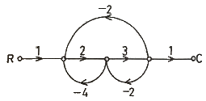
- 6/21
- -6/21
- 6/27
- -6/27
(정답률: 56%)
63. 그림과 같은 제어에 해당하는 것은?
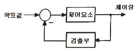
- 개방 제어
- 개루프 제어
- 시퀀스 제어
- 페루프 제어
(정답률: 74%)
64. 위치 감지용으로 적합한 장치는?
- 전위차계
- 회전자기부호기
- 스트레인게이지
- 마이크로폰
(정답률: 68%)
65. 자동제어계에서 과도응답 중 지연시간을 옳게 정의한 것은?
- 목표 값의 50%에 도달하는 시간
- 목표 값이 허용오차 범위에 들어갈 때까지의 시간
- 최대 오버슈트가 일어나는 시간
- 목표 값의 10~90%까지 도달하는 시간
(정답률: 56%)
66. 평형위치에서 목표 값과 현재 수위와의 차이를 잔류 편차(offset)라 한다. 다음 잔류 편차가 있는 제어계는?
- 비례 동작
- 비례 미분 동장
- 비례 적분 동작
- 비례 적분 미분 동작
(정답률: 65%)
67. 부궤환(negative feedback) 증폭기의 장점은?
- 안정도의 증가
- 증폭도의 증가
- 전력의 절약
- 능률의 증대
(정답률: 62%)
68. 제어계에서 동작신호를 조작량으로 변화시키는 것은?
- 제어량
- 제어요소
- 궤환요소
- 기분입력요소
(정답률: 63%)
69. 피드백 제어계의 안정도와 직접적인 관련이 없는 것은?
- 이득 여유
- 위상 여유
- 주파수 특성
- 제동비
(정답률: 61%)
70. 직류전동기의 속도제어 방법이 아닌 것은?
- 전압제어
- 계자제어
- 저항제어
- 슬립제어
(정답률: 66%)
71. 저항 R1, R2가 병렬로 접속되어 있을 때, R1에 흐르는 전류가 3A이면 R2에 흐르는 전류는 몇 A인가?
- 1.9
- 1.5
- 2.0
- 2.5
(정답률: 67%)
72. 어떤 계의 단위 임펄스 응답이 e-2t이다. 이 제어계의 전달함수 G(s)는?
- 1/s
- 1/s+1
- 1/s+2
- s+2
(정답률: 58%)
73. 자동제어의 기본 요소로서 전기식 조작기기에 속하는 것은?
- 다이어프램
- 벨로우즈
- 펄스 전동기
- 파일럿 밸브
(정답률: 61%)
74. 시퀀스 제어에 관한 설명 중 틀린 것은?
- 시간지연요소가 사용된다.
- 조합 논리회로로도 사용된다.
- 기계적 계전기 접점이 사용된다.
- 전체 시스템의 접점들이 일시에 동작한다.
(정답률: 76%)
75. 다음 블록선도를 수식으로 표현한 것 중 옳은 것은?
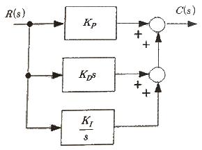
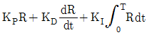
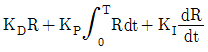
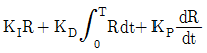
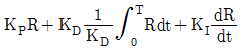
(정답률: 47%)
76. 그림과 같은 피드백회로의 전달함수 C(s)/R(s)는?
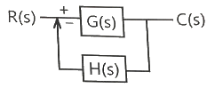
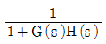
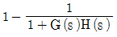
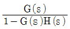
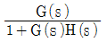
(정답률: 68%)
77. 다음 분류기의 배율은? (단, Rs : 분류기의 저항, Rn:전류계의 내부저항)
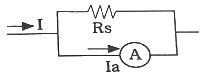
- Rs/Rn
- 1+Rs/Rn
- 1+Rn/Rs
- Rn/Rs
(정답률: 41%)
78. 그림과 같이 교류의 전압을 직류용 가동코일형 계기를 사용하여 측정하였다. 전압계의 눈금은 몇 V인가? (단, 교류전압의 최대값은 Vm이고, 전압계의 내부저항 R의 값은 충분히 크다고 한다.)
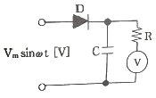
- Vm
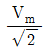
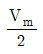
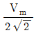
(정답률: 54%)
79. 제어량이 온도, 압력, 유량, 액위, 농도 등과 같은 일반 공업량일 때의 제어는?
- 추종제어
- 시퀀스제어
- 프로그래밍제어
- 프로세스제어
(정답률: 68%)
80. 그림과 같은 Y결선 회로와 등가인 △결선 회로의 Zab, Zbc, Zca값은?
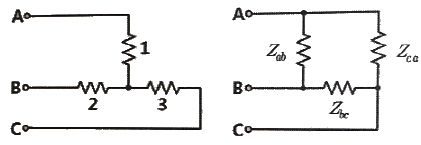
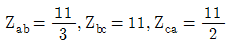
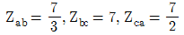
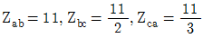
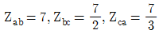
(정답률: 50%)
- 정격하중: 1000kg
- 오버밸런스율: 40%
- 오버밸런스율은 정격하중의 일부를 추가로 지탱할 수 있는 비율을 의미한다. 따라서 실제로 권상전동기가 지탱해야 할 하중은 1000kg * (1 + 40%) = 1400kg 이다.
- 총합효율: 60%
- 총합효율은 권상전동기가 소비하는 전력과 실제로 지탱하는 하중의 비율을 의미한다. 따라서 권상전동기가 소비해야 할 전력은 1400kg * 60m/min / 60 / 1000 * 1 / 0.6 = 14kW 이다.
- 따라서 권상전동기의 용량은 약 9.8kW 이다.
따라서 정답은 "9.8" 이다.